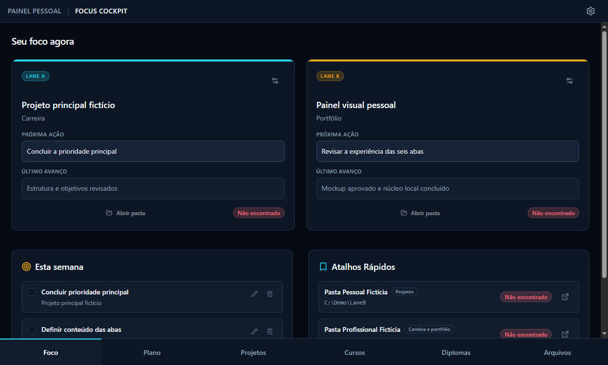

Desktop Application · Local-First
Focus Cockpit
Um ambiente desktop de trabalho projetado para organizar projetos, cursos e prioridades sem depender de nuvem ou expor dados corporativos.
Problema:
Dispersão de conhecimento e risco de privacidade em ferramentas web de terceiros.
Solução:
Arquitetura desktop em Tauri (Rust) com interface React e persistência direta em SQLite local.
Stack:
Tauri, Rust, React, SQLite, Tailwind